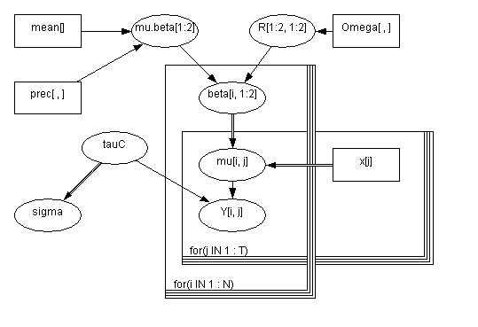
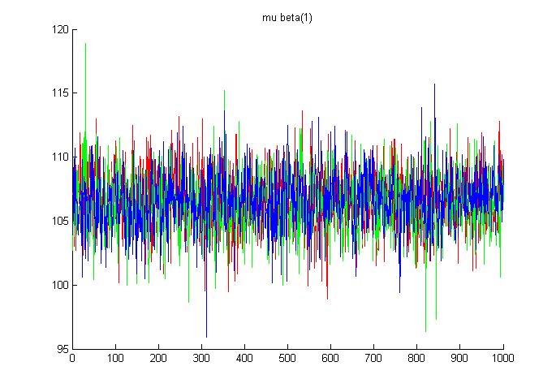
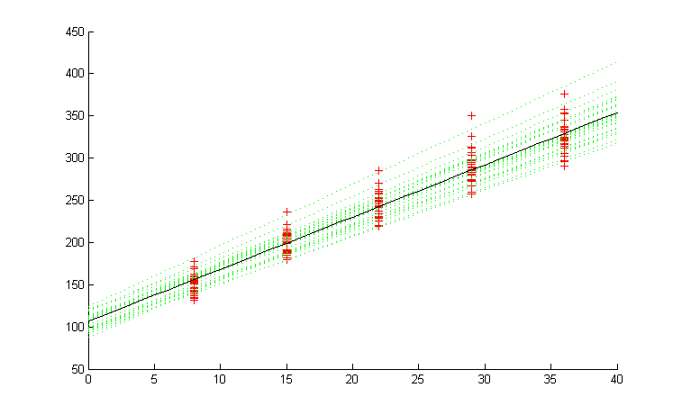

The Birats example is one of the examples from the WinBugs software and illustrates linear regression with random effects. The model uses a bivariate Gaussian as a prior on the two regression coefficients (intercept and slope).
Each rat's growth is describe by the linear equation of mu[i, j] <- beta[i, 1] + beta[i, 2] * x[j], where x[] is an array of time periods when the weights of the rats were taken. So mu[i, j] indicates the weight of the i-th rat during the j-th time interval. The beta values come from a bivariate normal distribution, with mean of mu.beta, and covariance R. tauC models the measurement precision. The model is specified in birats_model.txt, shown below.

model
{
for( i in 1 : N ) {
beta[i , 1:2] ~ dmnorm(mu.beta[], R[ , ])
for( j in 1 : T ) {
Y[i , j] ~ dnorm(mu[i , j], tauC)
mu[i , j] <- beta[i , 1] + beta[i , 2] * x[j]
}
}
mu.beta[1:2] ~ dmnorm(mean[],prec[ , ])
R[1:2 , 1:2] ~ dwish(Omega[ , ], 2)
tauC ~ dgamma(0.001, 0.001)
sigma <- 1 / sqrt(tauC)
}
Now we need to specify the data and initial conditions.
In Matlab, we type
dataStruct = struct( ...
'x', [8.0, 15.0, 22.0, 29.0, 36.0], ...
'N', 30, ...
'T', 5, ...
'Omega', [200, 0; 0, 0.2], ...
'mean', [0,0], ...
'prec', [1.0e-6, 0; 0, 1.0e-6], ...
'Y', [ 151, 199, 246, 283, 320; ...
145, 199, 249, 293, 354; ...
147, 214, 263, 312, 328; ...
155, 200, 237, 272, 297; ...
135, 188, 230, 280, 323; ...
159, 210, 252, 298, 331; ...
141, 189, 231, 275, 305; ...
159, 201, 248, 297, 338; ...
177, 236, 285, 350, 376; ...
134, 182, 220, 260, 296; ...
160, 208, 261, 313, 352; ...
143, 188, 220, 273, 314; ...
154, 200, 244, 289, 325; ...
171, 221, 270, 326, 358; ...
163, 216, 242, 281, 312; ...
160, 207, 248, 288, 324; ...
142, 187, 234, 280, 316; ...
156, 203, 243, 283, 317; ...
157, 212, 259, 307, 336; ...
152, 203, 246, 286, 321; ...
154, 205, 253, 298, 334; ...
139, 190, 225, 267, 302; ...
146, 191, 229, 272, 302; ...
157, 211, 250, 285, 323; ...
132, 185, 237, 286, 331; ...
160, 207, 257, 303, 345; ...
169, 216, 261, 295, 333; ...
157, 205, 248, 289, 316; ...
137, 180, 219, 258, 291; ...
153, 200, 244, 286, 324 ] );
init = struct( ...
'mu_beta', [0,0], ...
'tauC', 1, ...
'beta', ...
[100,6;100,6;100,6;100,6;100,6; ...
100,6;100,6;100,6;100,6;100,6; ...
100,6;100,6;100,6;100,6;100,6; ...
100,6;100,6;100,6;100,6;100,6; ...
100,6;100,6;100,6;100,6;100,6; ...
100,6;100,6;100,6;100,6;100,6], ...
'R', [1,0;0,1]);
initStructs(1) = init;
initStructs(2) = init;
initStructs(3) = init;
We replicate the init parameters three times so that we could run three separate
chains. Running multiple chains allows us to use Gelman and Rubin's EPSR
(estimated potential scale reduction) to check for convergence.
[Gelman, A., and Rubin, D. (1992a), "Inference from Iterative Simulation using
Multiple Sequences," Statistical Science, 7, 457-511.]Now we call the function.
[samples, stats, structArray] = matbugs(dataStruct, ...
fullfile(pwd, 'birats_model.txt'), ...
'init', initStructs, ...
'nChains', 3, ...
'view', 1, 'nburnin', 1000, 'nsamples', 1000, ...
'thin', 2, ...
'monitorParams', { 'beta', 'mu_beta', 'R', 'mu', 'sigma' }, ...
'Bugdir', 'C:/Program Files/WinBUGS14');
BUGS produces a lot of output, and then waits for you to close/ quit
it before returning to Matlab.
(Set 'view', 0 if you want it to automatically close the window and
return to Matlab.)
'samples' are the actual Gibbs samples that were generated.
>> samples
R: [4-D double]
beta: [4-D double]
mu: [4-D double]
mu_beta: [3x1000x2 double]
sigma: [3x1000 double]
The indexing convention is as follows:
scalarVar(chain, sample) vectorVar(chain, sample, dim1) matrixVar(chain, sample, dim1, dim2)'stats' gives means, standard deviation and the EPSR statistics.
>> stats
stats =
Rhat: [1x1 struct]
mean: [1x1 struct]
std: [1x1 struct]
>> stats.mean
ans =
R: [2x2 double]
beta: [30x2 double]
mu: [30x5 double]
mu_beta: [106.5532 6.1834]
sigma: 6.1338
>> stats.Rhat
ans =
R: [2x2 double]
beta: [30x2 double]
mu: [30x5 double]
mu_beta: [2x1 double]
sigma: 0.9995
You can use the final samples statistics as you please. One trivial thing to do
would be to just plot the samples as is. The following just plots the three
chains of mu_beta(1).
figure; hold on;
colours = 'rgb';
for c=1:3
plot(samples.mu_beta(c,:,1), colours(c));
end
title('mu beta(1)');

A more interesting thing would be to plot the predicted response for the rats to see how well the values fit against the observed values. One advantage of using MatBugs is that we are able to quickly create plots such as this using Matlab's graphing capabilities.
[N T] = size(dataStruct.Y);
weights = dataStruct.Y(:);
ages = repmat(dataStruct.x, [N 1]);
ages = ages(:);
figure; hold on;
plot(ages, weights, 'r+');
% Now plot the predicted response for each rat as a function of time.
t = 0:1:40;
for i=1:dataStruct.N
weight_lin = stats.mean.beta(i, 1) + t * stats.mean.beta(i, 2);
plot(t, weight_lin, 'g:');
end
% Now plot the predicted response of the population model
weight_lin = stats.mean.mu_beta(1) + t * stats.mean.mu_beta(2);
h=plot(t, weight_lin, 'k'); set(h, 'linewidth', 3)
title('red = data, green = sampled coef, black = mean coef')
xlabel('age')
ylabel('weight')
The red crosses are the observed weights of the rats. The dotted green lines are the predicted weights for each of the rats (using beta[i,:]). The solid black line is the predicteed weight of a generic rat (using mu_beta[:]).